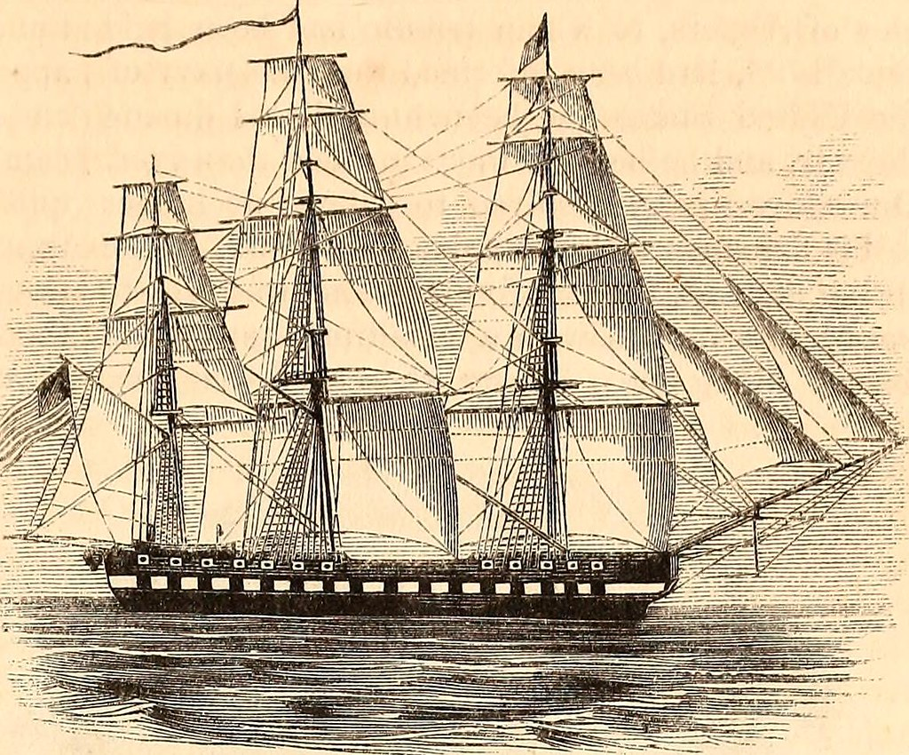

:: StoryTitle
cooper

:: StoryData
{
 "ifid": "08EC742B-96A6-4CC2-8A0C-B3E8B4638FCE",
 "format": "Entweedle",
 "format-version": "1.1.1",
 "startnode": "1",
 "zoom": "1",
 "start": "Introduction"
}

:: UserScript [script]


:: UserStylesheet [stylesheet]


:: Introduction [Introduction] {"position":"400,100","size":"100,100"}
</img>

Vous vous réveillez dans vos quartiers du bateau, le St-Agne. Le son de l'explosion qui vous a réveillé commence à se dissiper. En sortant de votre cabine en trombe, prenant seulement le temps de passer une chemise et des bas, vous voyez des membres de l'équipage courir vers le pont.
En interpellant un matelot, il vous hurle que le navire est attaqué et que le capitaine a appelé tous les membres de l'équipage à rejoindre leurs postes. 
[[Rejoindre le pont]]
[[Retourner à votre cabine]]

:: Rejoindre le pont [Introduction] {"position":"500,300","size":"100,100"}
En arrivant sur le pont du St-Agne, un fleuron de la marine britannique, vous voyez une scène de chaos : une bataille fait rage au milieu d'une tempête, le St-Agne poursuivi par 2 navires battant pavillon noir.
Sur le pont, des traces de combat et des flammes commencent à se répandre. Chaque membre de l'équipage s'affairant au milieu de la tempête et de la bataille, créant un chaos couvert par le bruit des canons ou les cris des hommes et du capitaine donnant des ordres depuis la barre.
Vous voyant sur le pont, le capitaine vous ordonne de prendre la barre et de sortir le navire de la situation.
[[Diriger le navire vers le coeur de la tempête]]
[[Faire demi-tour et affronter les pirates]]

:: Retourner à votre cabine [Introduction] {"position":"300,300","size":"100,100"}
Vous entrez dans une simple cabine d'homme d'équipage, agrémentée de quelques souvenirs de voyages.
Vous prenez votre sabre et finissez de vous habillez en vitesse avant de monter sur le pont.(set: $Sabre to true)
[[Rejoindre le pont]] 

:: Diriger le navire vers le coeur de la tempête {"position":"400,500","size":"100,100"}
Double-click this passage to edit it.

:: Faire demi-tour et affronter les pirates {"position":"600,500","size":"100,100"}
Double-click this passage to edit it.
